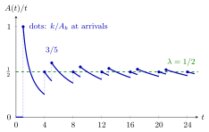

Arrival and Departure Rates¶
Definition¶
Let be the number of arrivals and the number of departures in along one sample path of a queueing system (the counting processes of Section 3.1). The arrival rate and the departure rate are the long-run average numbers of arrivals and departures per unit time,
The notes assume that both limits exist and are finite, with .
Interpretation¶
A rate is a count divided by elapsed time, taken over a very long horizon. It describes one sample path, so it makes sense for any arrival process whose long-run average exists, not only for a Poisson process.

The figure is Example 1, with inter-arrival times alternating . The ratio jumps up at each arrival (dots, value ) and decays like until the next one. Its peaks and its troughs both close in on the green level , the reciprocal of the mean inter-arrival time .
Theorem 4.1.1 makes this precise: counting arrivals per unit time and averaging the arrival times per job give reciprocal limits. The proof squeezes between the last arrival before and the next one, . For iid inter-arrival times the strong law of large numbers gives , so , which matches the arrival rate of the Poisson process in Probability Theory. The limit need not exist: an arrival stream that switches on and off in ever longer blocks has no long-run rate (Example 3).
Departures cannot outrun arrivals, so . The departure rate is smaller when jobs are blocked, or when the queue grows without bound and the server is the bottleneck.
A common slip is to equate with : the first is , the second (TF 4.1.2). Another is to read as a sign of instability; every queue with ongoing arrivals has it (TF 4.1.1).
Key Results¶
- Theorem 4.1.1. For , as if and only if as ; the existence of either limit implies the existence of the other.
- For iid inter-arrival times with , almost surely, so .
- By queue-length conservation, , so . The number in the system grows linearly exactly when , and is rate stability.
- Blocked jobs do not depart, so blocking a positive fraction of the jobs gives ; in an overloaded queue without blocking the departure rate equals the service rate, .
Examples¶
1. Alternating inter-arrival times. Let alternate , so the arrival times are and . Then and , so and, by Theorem 4.1.1, . Directly: , just before the next arrival , and right after it .
2. Departures with and without blocking. Give every job of Example 1 the service time . The departure times are : in each interval with two jobs arrive (at and ) and two leave (at and ). Hence and . Now take service time and block every job that finds the server busy. The jobs at times are served until , so the jobs at are blocked, and the departure rate is .
3. A path without a rate. Let one job arrive per time unit during and none during , for . The on-periods up to have total length . Hence is close to at and close to at , for every large , so keeps oscillating and does not exist.
Prerequisites¶
Related Concepts¶
- Service Rate
- Rate Stability
- Server Load
- Server Utilization
- Queue-Length Conservation
- Little's Law
- Renewal Reward Theorem
Sources¶
- Stochastic Operations Research · Week 3
- N. D. van Foreest, Sample Path Analysis and Simulation of Stochastic Systems, Section 4.1
Aliases: arrival rate, departure rate, throughput, long-run arrival rate, sample-path rate, lambda and delta Keywords: \lambda = \lim A(t)/t, \delta = \lim D(t)/t, A_k/k \to 1/\lambda, \mathbb{E}[X] = 1/\lambda, counting process, long-run average, Theorem 4.1.1 Symbols: delta, element of, infinity, lambda, mu, sum
Last updated: 29 October 2026 20:42
Arrival and Departure RatesBatch Formation TimeRate StabilityRenewal Reward TheoremSCV Estimation from CountsServer LoadServer UtilizationService RateState-Dependent Arrival RateTraffic EquationsCounting ProcessArrival-Time RecursionArrival RateStrong Law of Large NumbersQueue-Length ConservationLittle's Law